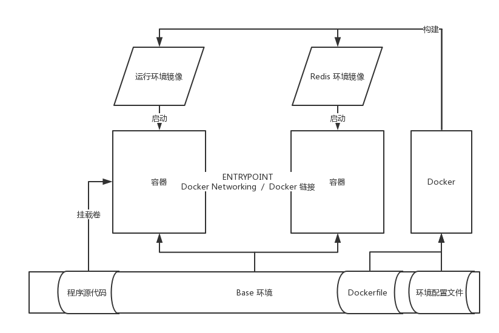
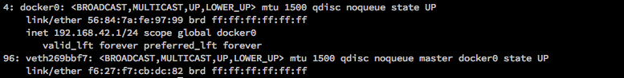
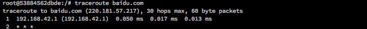
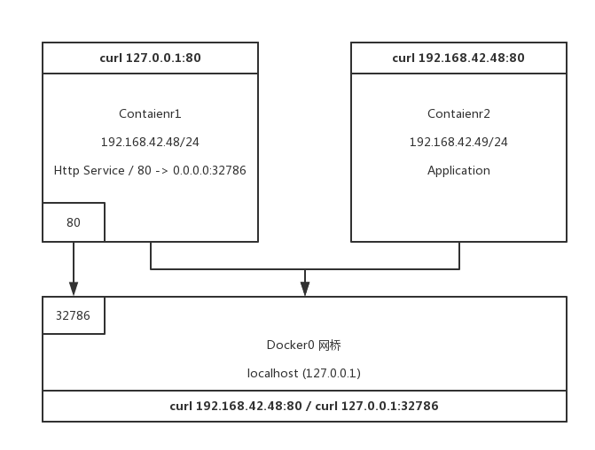

Docker 基础记录（二）
接着上一篇文章，我们继续深入了解并学习关于 Docker 的基础知识以及相关基于 Docker 实现的典型架构解决方案。Docker 在协调线下／上多环境开发等场景下有着其独特的优势。
1、Docker 作为本地开发环境：
编写 Dockerfile 文件：
# Dockerfile
FROM ubuntu:14.04
MAINTAINER YHSPY "yhorg@hotmail.com"
ENV REFRESHED_AT 2017-11-06
RUN apt-get -yqq update && apt-get -yqq install nginx # 安装 Nginx；
RUN mkdir -p /var/www/html/website # 容器内创建文件夹；
ADD nginx/global.conf /etc/nginx/conf.d/ # 复制本地配置文件到镜像中；
ADD nginx/nginx.conf /etc/nginx/nginx.conf
EXPOSE 80 # 打开 80 端口；
构建镜像：
docker build -t becavalier/nginx
通过镜像来构建可用容器：
# 运行容器，并使用 `-v` 参数来挂载本地目录到容器卷，卷可以在容器间进行共享；
docker run -d -p 80 --name="website" -v $PWD/website:/var/www/html/website:rw becavalier/nginx nginx
# 常用于多个不同的系统环境，多个不同的框架环境，多个不同的运行环境，公用同一份代码；
2、基于 Docker 的微服务容器关联：

ip a show docker0 # docker0 网络接口，docker0 是一个虚拟的以太网桥，用来连接容器和本地宿主网络；
Docker 每创建一个容器就会创建一组互联的网络接口，两端分别连接容器里的 eth0 接口和宿主机的 veth* 接口，这些所有的 veth* 接口最后会被绑定到 docker0 的网桥上。

如果我们在容器内通过 traceroute 来跟踪一个 TCP 请求的路由节点，会发现所有在容器内发送的请求都会先发送到由 docker0 创建的虚拟子网的网关地址上。

- 通过硬编码 IP 地址进行 Docker 容器之间的互联（如何访问 Container1 的 Http 服务）：

- 通过 Docker Networking（Docker V1.9 以上）：
Docker Networking 会自动更新各个容器内的 /etc/hosts 文件来保证各个容器的 IP 准确。
docker network create app # 创建一个桥接网络；
docker network inspect app # 查看桥接网络；
docker network ls # 列出所有网络；
docker network rm <network> # 删除一个桥接网络；
docker network connect <network> <container> # 将已有容器加入到网络；
# 在运行容器时指定加入的桥接网络；
docker run -d --net=app --name=static_web becavalier/static_web
# 在桥接网络内的容器通过以下方式即可互相访问；
ping <network>.<container>
- 通过 Docker 链接（Docker V1.9 以下推荐）：
Docker 容器的名字是唯一的。使用 Docker 链接创建的容器建交互接口是安全，并且不对外开放的。
# 启动“服务”方；
docker run -d --name redis becavalier/redis
# “客户” 链接 “服务”；
docker run -p 4567 --name webapp --link redis:db -t -i -v ...
3、Docker 用于 CI：
构建运行 Docker 的 Jenkins 服务器 -> Docker 递归（Docker in Docker）运行。
# 用于构建 Jenkins 的 Dockerfile；
FROM ubuntu:14.04
MAINTAINER yhorg@hotmail.com
ENV REFRESHED_AT 2017-11-09
RUN apt-get update -qq && apt-get install -qqy curl apt-transport
-https
RUN apt-key adv --keyserver hkp://p80.pool.sks-keyservers.net:80
...
VOLUME /var/lib/docker # Docker 用来存储容器的目录；
...
# 创建 Docker-Jenkins 容器；
# --privileged 标志给予 Docker-Jenkins 足够的权限；
docker run -p 8080:8080 --name=jenkins --privileged -d becavalier_jenkins